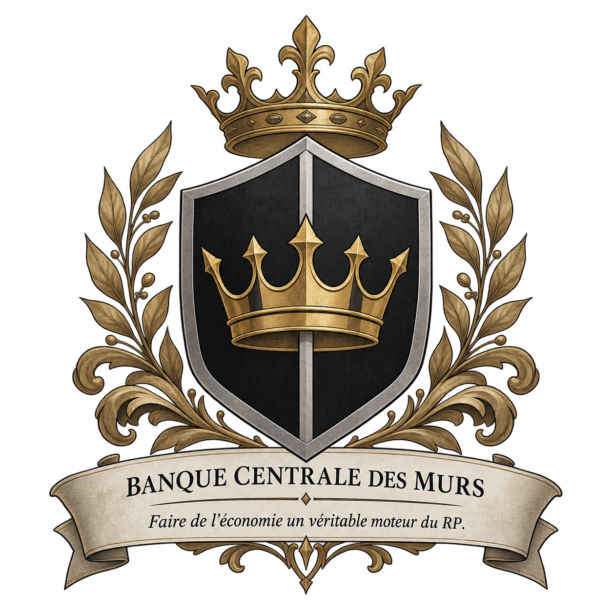

Comptes
Déposer, conserver et gérer son argent dans un cadre bancaire organisé.

BANQUE CENTRALE DES MURS
Une institution dédiée au financement des citoyens, des commerces, des exploitations agricoles et des projets qui font vivre les Murs.
NOS SERVICES
Déposer, conserver et gérer son argent dans un cadre bancaire organisé.
Financer un projet personnel, commercial, agricole ou immobilier.
Placer jusqu’à 5 Gallions et bénéficier d’un rendement de 1 % selon les conditions du plan.
Achat, location et financement de maisons et propriétés.
Achat, location et financement de terres agricoles et d'exploitations.
Accompagner les commerces dans leur création, leur équipement et leur expansion.
FINANCEMENT
Les taux sont volontairement modérés afin de soutenir le développement sans alourdir les remboursements. Le taux final dépend du montant, de la durée et des garanties.
2 – 3 % · 1 à 4 semaines
Petits besoins et équipement.3 – 4 % · 2 à 8 semaines
Installation, équipement et projets personnels.4 – 5 % · 4 à 12 semaines
Création ou développement d’un commerce.3 – 5 % · 4 à 16 semaines
Terres, matériel et exploitation.4 – 6 % · 8 à 24 semaines
Achat ou financement d’une propriété.Sur étude · durée selon contrat
Projets majeurs et investissements institutionnels.SIMULATION
Une estimation simple avant toute demande officielle.
PLAN ÉPARGNE
Le Plan Épargne de la Banque Centrale des Murs permet de placer son patrimoine et de bénéficier d’un rendement de 1 %. Le montant placé est plafonné à 5 Gallions par plan.
Rendement appliqué au montant placé selon les conditions du contrat.
Déposez vos Gallons sur votre plan et laissez votre épargne produire son rendement.
Le montant pouvant bénéficier du plan est limité à 5 Gallions, afin de maintenir un cadre bancaire équilibré.
SIMULATION
Entrez le montant que vous souhaitez placer pour estimer le gain à 1 %.
TARIFICATION
| Service | Tarif | Durée / condition |
|---|---|---|
| Plan Épargne B.C.M. | +1 % | Plafond : 5 Gallions |
| Prêt personnel | 3 – 4 % | 2 à 8 semaines |
| Prêt professionnel | 4 – 5 % | 4 à 12 semaines |
| Prêt agricole | 3 – 5 % | 4 à 16 semaines |
| Prêt immobilier | 4 – 6 % | 8 à 24 semaines |
| Petite maison — location | 2 Vals | Par semaine |
| Maison standard — location | 4 Vals | Par semaine |
| Grande propriété — location | 8 Vals | Par semaine |
| Petite parcelle agricole | 1 Gallion | À l’achat |
| Parcelle standard | 2 Gallions | À l’achat |
| Grande exploitation | 4 Gallions | À l’achat |
Les tarifs sont indicatifs et peuvent évoluer selon les disponibilités, le risque et les décisions de la direction.
PATRIMOINE
Location : 2 Vals / semaine
Location : 4 Vals / semaine
Location : 8 Vals / semaine
Terre agricole à l'achat.
Terre agricole à l'achat.
Projet agricole développé.
NOTRE ENGAGEMENT
Chaque prêt est enregistré dans un contrat précisant le montant, le taux, la durée et les conditions de remboursement. Les gros financements peuvent nécessiter des garanties.
✓ Contrats écrits
✓ Registre des prêts
✓ Suivi des remboursements
✓ Plafonds de financement
✓ Étude du risque
✓ Renégociation possible
POURQUOI LA B.C.M. ?
Financer les commerces, habitations, exploitations et projets utiles à la prospérité des Murs.
Donner une véritable utilité à la monnaie et encourager les échanges entre citoyens et institutions.
Accompagner progressivement les citoyens, les entreprises et les institutions.
SYSTÈME MONÉTAIRE
CONTACT
Siège : Mitras
Comptoir : Trost
Direction : Conseil de la Banque
Administration : Conseil des Murs